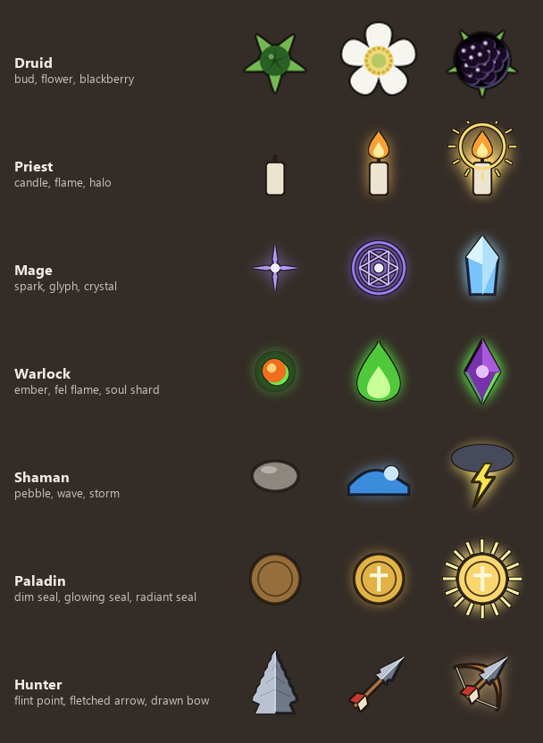
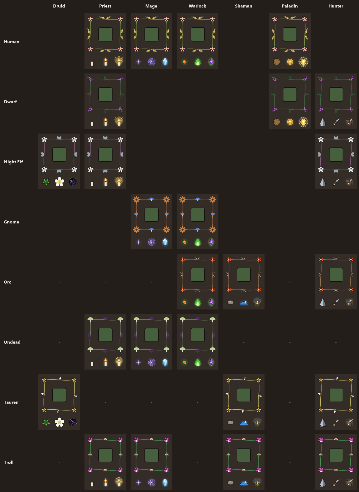
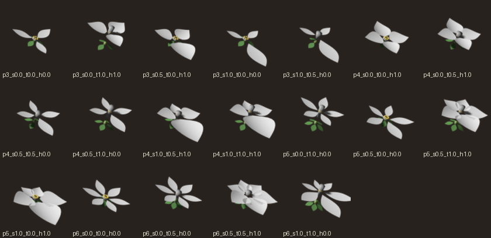

Manabloom: race × class, draft
Each race gets a wreath from its homeland's plants. Each class gets its own three-step ladder, the thing that grows on the wreath as you cast well (the druid's is the shipped bramble: bud, flower, blackberry). Put together, every race and class pairing has its own look. Only the 22 pairings that use mana in classic are shown; Forever's list needs checking before any of this is built.
Race wreaths: diffusion concept beside the geometric draft
The left image in each pair is a MOSS diffusion concept, used as reference for plants, colour and mood. The right one is the geometric version that would go in game, drawn in code at button size. Concepts are reference only; nothing generated ships.
Class ladders
Three steps per class, from a poor run of casts to a perfect one. All drawn as flat geometric shapes.

The pivot
Rows are races, columns are classes. Each cell is a button in the race's wreath, with the class ladder underneath. A dash means that pairing doesn't exist in classic. Each cell uses the class's general ladder; race-specific versions (a Night Elf priest's moonflower in place of a candle, for example) could come later.

Blender: the 3D → 2D route
Flowers modelled in Blender from Albia's flower-geometry rig (flower3d.py), rendered small. These
are three-quarter views. For wreath motifs the camera would need to look straight down, and the renders would be
flattened to the same flat colours as the geometric set, so the two styles sit together on one bar.
